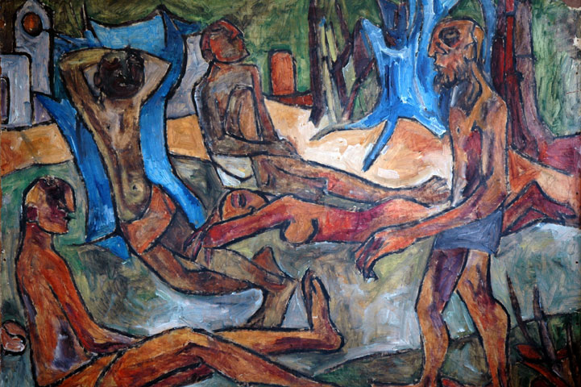

Kerala · 2026 and beyond
Kerala faces a dual systemic challenge: escalating climate vulnerabilities colliding with acute youth brain drain. As global economic paradigms shift toward sustainability, impact finance, and green skills, traditional career and conventional tech-startup paths are facing rapid disruption. However, Kerala is uniquely equipped to navigate this transformation, underpinned by its strong educational foundation, exceptional human development markers, and active grassroots engines like the Startup Mission, Haritha Keralam, and Kudumbashree. By realigning these diverse institutional efforts into a broader, unified vision, the state can foster societal improvement while opening up vibrant entrepreneurial and economic frontiers for its youth.
Unlocking this opportunity requires reimagining entrepreneurship beyond software, mobilizing youth to develop practical solutions for urgent local challenges in waste management, agriculture, social empowerment & ecological degradation. Offering energetic minds meaningful, problem-solving careers at home directly counters brain drain while establishing a globally relevant, climate-resilient development model. Rather than prescribing rigid top-down execution, this vision seeks to spark collective grassroots action by 2030. Anchored across five pillars—ecology, climate, skilling, education, and community—Kerala can transform its local crises into an engine for sustainable youth empowerment and economic renewal.
